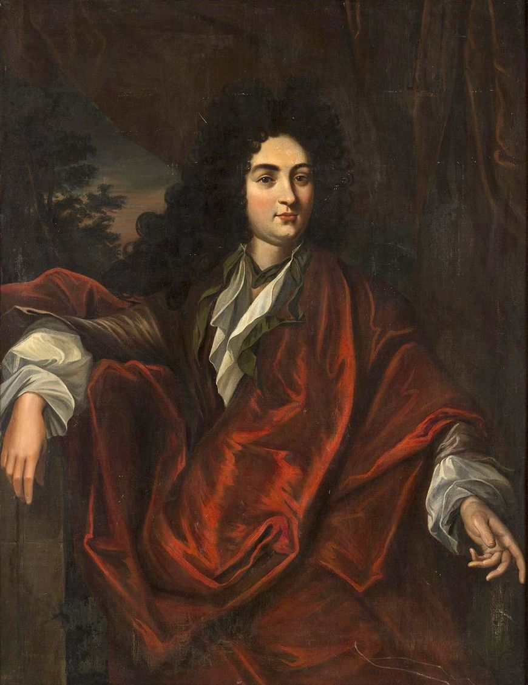

A Belgian director
<*- HOME
After setting up his equipment to interview the once popular retired Belgian director, Chandan found his attention swerving away from the eccentric personality and the person supposed to be interviewing him to the austere box of a room that served as the director's retirement place. He had never quite seen a room this small which could be minimalist and yet conveniently habitable. Two lamps stuck to a wall. A radio neatly kept on a single protruding tile from a wall which had just enough space to carry it. A nondescript ceiling fan. A washing basin. A single bed. No restroom but that was presumably situated in a common facility in this relatively well maintained motel. There wasn't any cupboard. A packed suitcase rested next to the leg of the bed which was pressed to the wall one foot away from the door which was flanked by two rectangular glass windows which allowed enough daylight in to illuminate the room. It was modest, austere and tidy - not unlike a scandinavian prison cell. Chandan mused if he could live in a place of this sort, if his life and its requirements could be pared down to such a minimal and simple habitation and if so, would he want to pursue such an option in the interest of saving himself from the bloated city life that demands the kind of absurd contortions alien to rustics and villagers.
The director starts to speak, in English, because any other language would not align with Chandan's idea of what this event entails for him. Far from coming across as a genius deserving reverence, he quickly devalues the currency of his cinematic language by speaking in a pathos ridden, bumbling, incoherent way about nothing in particular. The interviewer is seemingly emboldened by this, less a fawning figure in the presence of a genius now but more a ruthless star inquisitor who could fashion this eccentric interviewee into his personal mine for the kind of answers that might land the interviewer some fame. However, not far into the interview, the belgian director requests some reaarrangements. He has spotted the interviewer in the mirror which reflects his bearded visage right below a classical painting of some figure clearly pertaining to french nobility - dressed in a black and red velvet cloak in an opulent palace. The simple motel wall with the plain rectangular mirror reflecting the handsome journalist now sitting confidently on a metal chair below a baroque painting seemed unusually photographic to not be acknowledged and responded to in some fashion.

The belgian director decided he will respond to any questions only by looking at the interviewer in the mirror. However, this unorthodox request has consequences that destroy the possibility of its fulfillment. The interviewer, becoming suddenly conscious of his apparent charm on those in the room requests they take a break for him to call the network's costume and makeup artists so that they can adequately adorn him for this occasion. This is not economical. And as soon as chandan realizes that it would not be financially feasible to accomodate this narcisstic starlet, two men in black suits barge into the room, grab the interviewer and leave within what must have been less than 10 seconds. In his place now is another narcissistic starlet, a woman who is more obsessively concerned with powdering her face and brushing her hair fanning out than the interviewer before him. Chandan blinks and she's gone. He presumes that the men in suits responsible for recruitment must be getting much more efficient at what they do. Another blink, another starlet sitting in the interviewer's chair. Another blink and her doppelganger arrives, who inexplicably seems interested in a sincere inquiry with the director who has been watching this spectacle of replacement with amusement and a hoarse laughter that is not particularly distinct from that of the characters in his film. There seems to be nothing to do but watch, and not move. Chandan stands still, holding his equipment, playing the role he knows is required in his job description that permits some amount of freedom in his head to amuse himself silently as long as it is not apparent to the powers that be.
pulkit manocha